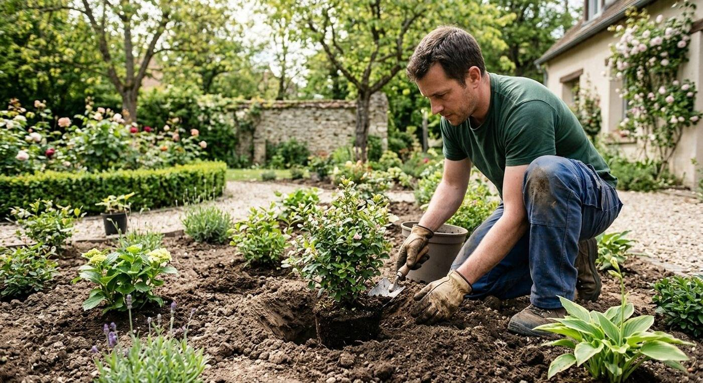

Prestations
Ce que nous réalisons pour votre jardin
Création, plantation, engazonnement et entretien : les prestations se composent selon votre terrain.


Création
Création de jardins
La création d'un jardin part de vos besoins, du terrain et de l'usage que vous en attendez.
- Massifs et bordures
- Pelouses
- Allées et cheminements

Plantations
Arbustes, haies et vivaces
La plantation donne sa structure au jardin : les végétaux se choisissent selon le lieu.
- Arbustes
- Haies
- Plantes vivaces


Pelouse
Engazonnement
Une pelouse commence par un sol bien préparé, puis un semis ou une pose de gazon.
- Préparation du sol
- Semis ou pose de gazon
- Bordures et finitions


Au fil des saisons
Entretien du jardin
Un jardin reste beau s'il est suivi : tonte, taille et soins se planifient selon vos besoins.
- Taille des haies
- Tonte des pelouses
- Entretien courant des massifs
Un devis ?
Un jardin à créer ou à entretenir ?
Quelques mots suffisent pour démarrer la discussion.